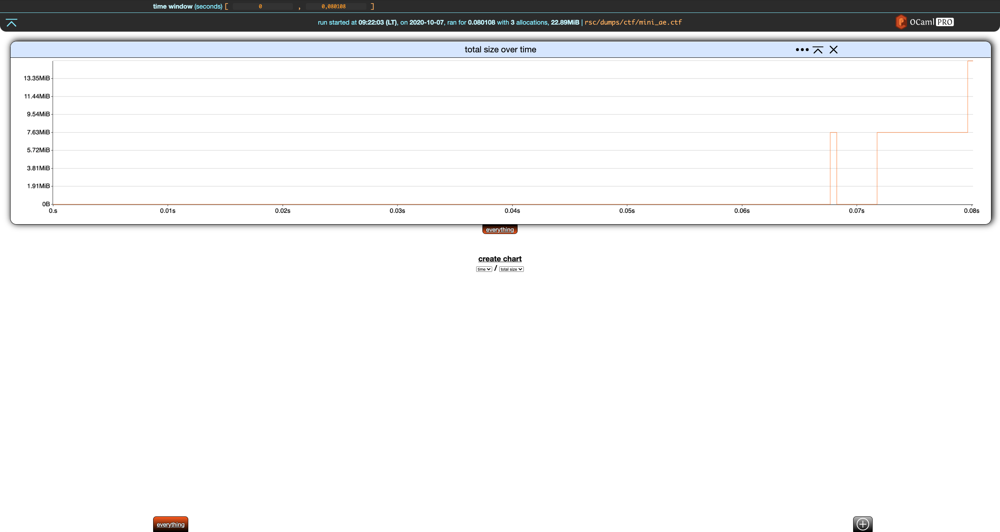
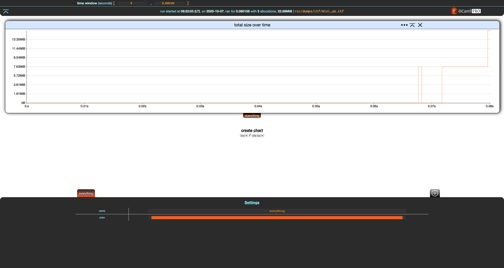
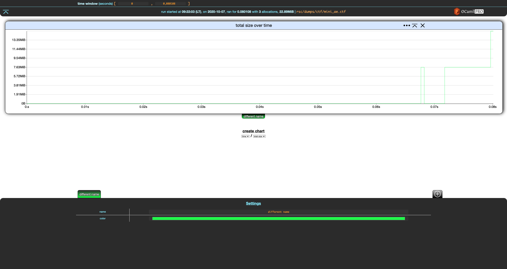
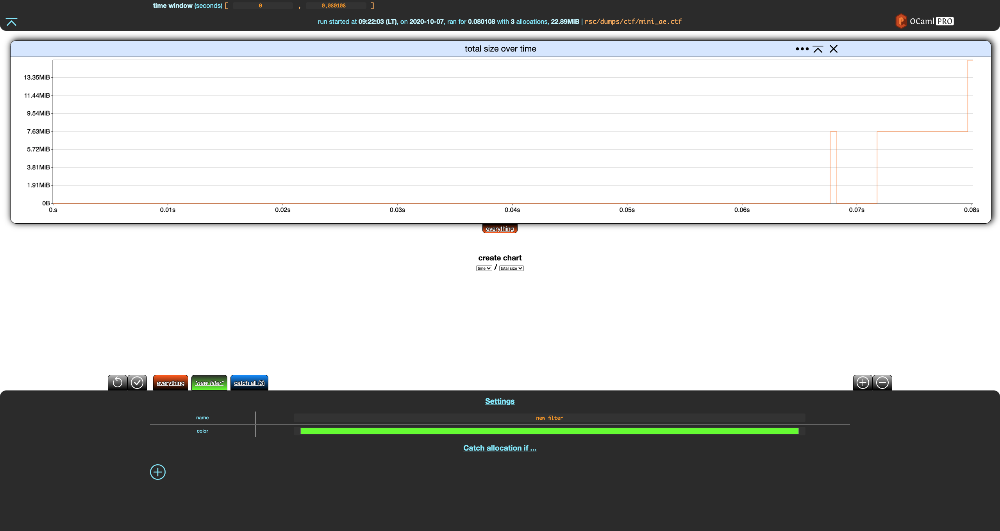
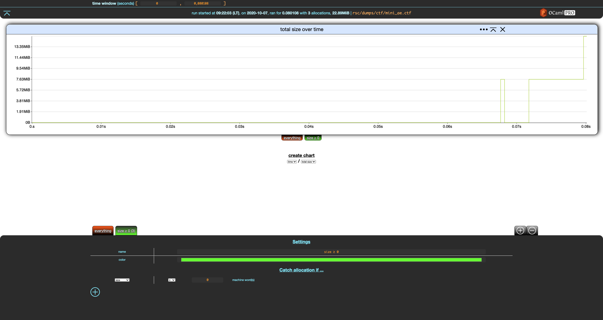
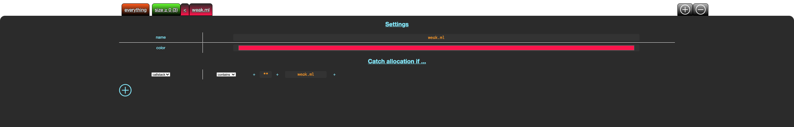
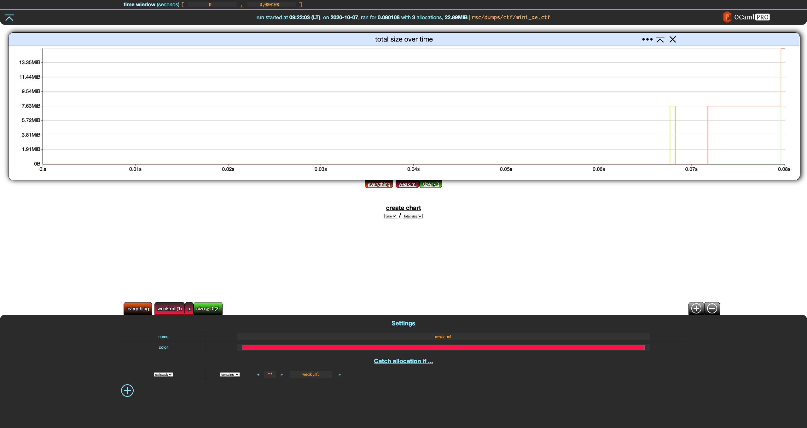
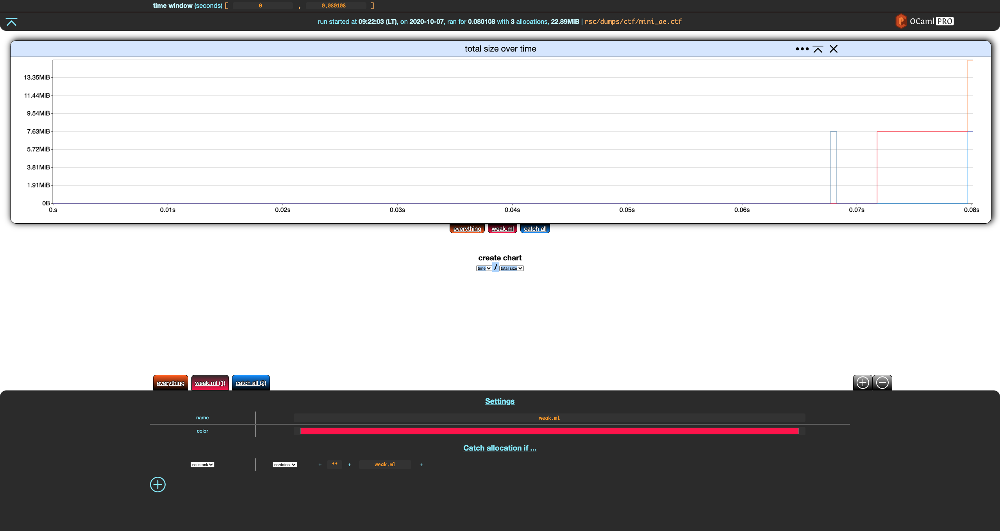
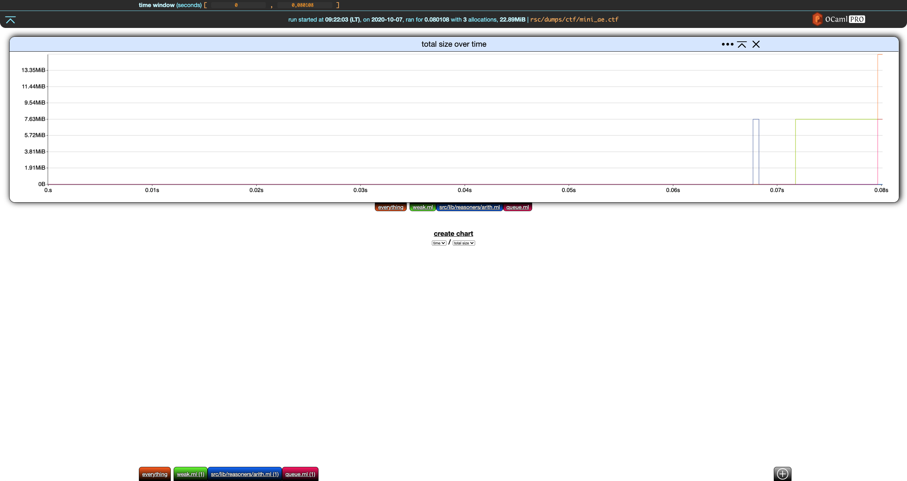

Basics
Our running example in this section will be rsc/dumps/mini_ae.ctf:
❯ memthol --filter_gen none rsc/dumps/ctf/mini_ae.ctf
|===| Starting
| url: http://localhost:7878
| target: `rsc/dumps/ctf/mini_ae.ctf`
|===|
Notice the odd --filter_gen none passed to memthol. Ignore it for now, it will be discussed later
in this section.
Once memthol is running, http://localhost:7878/ (here) will lead you to memthol's BUI, which
should look something like this:

Click on the orange everything tab at the bottom left of the screen.

Memthol's interface is split in three parts:
-
the central, main part displays charts. There is only one here, showing the evolution of the program's total memory size over time based on the memory dump.
-
the header gives statistics about the memory dump and handles general settings. There is currently only one, the time window.
-
the footer controls your filters (there is only one here), which we are going to discuss right now.
Filters
Filters allow to split allocations and display them separately. A filter is essentially a set of allocations. Memthol has two built-in filters. The first one is the everything filter. You cannot really do anything with it except for changing its name and color using the filter settings in the footer.

Notice that when a filter is modified, two buttons appear in the top-left part of the footer. The first reverts the changes while the second one saves them. Let's save these changes.

The everything filter always contains all allocations in the memory dump. It cannot be changed besides the cosmetic changes we just did. These changes are reverted in the rest of the section.
Custom Filters
Let's create a new filter using the + add button in the top-right part of the footer.

Notice that, unlike everything, the settings for our new filter have a Catch allocation if
... (empty) section with a + add button. Let's click on that.
This adds a criterion to our filter. Let's modify it so that the our filter catches everything of size greater than zero machine words, rename the filter, and save these changes.

The tab for our filter now shows (3) next to its name, indicating that this filter catches 3 allocations, which is all the allocations of the (tiny) dump.
Now, create a new filter and modify it so that it catches allocations made in file weak.ml. This requires
-
creating a filter,
-
adding a criterion to that filter,
-
switching it from
sizetocallstack -
removing the trailing
**(anything) by erasing it, -
write
weak.mlas the last file that should appear in the callstack.
After saving it, you should get the following.

Sadly, this filter does not match anything, although some allocations fit this filter. This is
because a custom filter F "catches" an allocation if
- all of the criteria of
Fare true for this allocation, and - the allocation is not caught by any custom filter at the left of
F(note that the everything filter is not a **custom filter).
In other words, all allocations go through the list of custom filters from left to right, and are caught by the first filter such that all of its criteria are true for this allocation. As such, it is similar to switch/case and pattern matching.
Let's move our new filter to the left by clicking the left arrow next to it, and save the change.

Nice.
You can remove a filter by selecting it and clicking the - remove button in the top-right part of
the footer, next to the + add filter button. This only works for custom filters, you cannot
remove built-in filters.
Now, remove the first filter we created (size ≥ 0), which should give you this:

Out of nowhere, we get the second and last built-in filter: catch-all. When some allocations are not caught by any of your filters, they will end up in this filter. Catch-all is not visible when it does not catch any allocation, which is why it was (mostly) not visible until now. The filter we wrote previously where catching all the allocations.
In the switch/case analogy, catch-all is the
else/defaultbranch. In pattern matching, it would be a trailing wildcard_.
So, weak.ml only catches one of the three allocations: catch-all appears and indicates it
matches the remaining two.
It is also possible to write filter criteria over allocations' callstacks. This is discussed in the Callstack Filters Section.
Filter Generation
When we launched this section's running example, we passed --filter_gen none to memthol. This is
because, by default, memthol will run automatic filter generation which scans allocations and
generates filters. The default (and currently only) one creates one filter per allocation-site file.
For more details, in particular filter generation customization, run
memthol --filter_gen help.
If we relaunch the example without --filter_gen none
❯ memthol rsc/dumps/ctf/mini_ae.ctf
|===| Starting
| url: http://localhost:7878
| target: `rsc/dumps/ctf/mini_ae.ctf`
|===|
we get something like this (actual colors may vary):
